Basic ggplotting
As I mentioned, I’m a firm believer that given the choice of creating a table or producing a plot, I would choose to make the plot unless there are other important factors that make the table more desirable. There are any number of plots that you make use in your analyses: scatterplots, bar plots (although there’s a bit of a backlash on barplots right now), histograms, boxplots, violin plots, heatmaps, rug plots, and the list goes on and on. What type of plot you choose to make should depend on what info you are attempting to stress and convey to your audience (including you). We’ll encounter most of these plots throughout the semester.
There are a number of ways to plot in R, including plotting functions installed in baseR and several custom packages. I think the most powerful way (and hence best for students to learn) to plot is using the ggplot package. ggplot is a bit tricky at first, but once it clicks it really clicks. Here I’m going to walk you through the construction of a histogram plot and lay out the logic of getting those plots in appropriate APA format. For the purposes of keeping things simple I’m going to focus on the types of data that we have encountered in class so far, namely frequency data and data related to central tendency. As our designs and analyses become more complex, I will have sections at the end of each week that build upon what we do here (scatterplots, regression plots, interaction plots, oh my!)
There are a few packages that we will introduce in this walkthrough, including: cowplot. I’ll go into further detail what they can do for us as we move along, but for now let’s just load in the one we are most familiar with:
If you recall, tidyverse contains a family of over 70 packages. ggplot2 is one of these packages. For the purposes of this walk-through I will be using the aggression_data dataset from Flora (and our previous walkthrough). If you want to follow along, you’ll need to import that data:
library(readr)
aggression_data <- read_table("https://raw.githubusercontent.com/tehrandavis/graduate_statistics/main/practice_datasets/aggression.dat", col_names = FALSE)
── Column specification ────────────────────────────────────────────────────────
cols(
X1 = col_double(),
X2 = col_double(),
X3 = col_double(),
X4 = col_double(),
X5 = col_double(),
X6 = col_double(),
X7 = col_double(),
X8 = col_double()
)Let’s also clean up, or wrangle, the data, in this case naming the header and fixing the gender variable:
The Basics
In general, the basic procedure for constructing a plot goes through the following steps:
- link to the data and tell
ggplothow to structure its output - tell
ggplotwhat kind of plot to make - adjust the axes and labels if necessary
- adjust the appearance of the plot for APA (or other appropriate format)
- add a legend if necessary
- save or export the plot
Perhaps most critically, building plot (much like running an analysis) is something that should be carefully considered and well-thought out. In order words it’s probably in your best interest early on to “sketch out” mentally of with a pen an paper, what your plot should look like—what’s on the x-axis? what’s on the y-axis, what kind of plot?, any coloring or other stylizing? is the data going to be grouped? etc.
Step 1: Building the canvas
Here you need to be thinking about what form you want the plot to take. Key points:
-
data =: what data set you will be pulling from. This needs to be in the form of adata_frame(), withnamesin the headers. For most data that we will be working with from here on out, that will be the case. However, for constructed / simulation data you may have to do this manually.
If you are unsure of the header names you can see them by:
[1] "age" "BPAQ" "AISS" "alcohol" "BIS"
[6] "NEOc" "gender" "NEOo" "fctr_Gender"Note that depending on what guide you follow you may also include mapping=aes() here as well. This would include telling R eventually what info goes on each axis, how data is grouped, etc. BUT this info can also be relayed in Step 2, and I think that conceptually it make more sense to put it there.
So for Step 1, just tell ggplot what data we are using and save our Step 1 to an object called p

As you can see we’ve created a blank canvas—nothing else to see here.
Step 2: Tell ggplot what kind of plot to make.
Plots can take several forms, or geoms (geometries), most common include: + histogram: geom_histogram + boxplot: geom_boxplot + scatter: geom_point + bar: geom_bar + line: geom_line
Here we are creating a histogram, so in Step 2 we add geom_histogram() to our original plot p. We also need to tell ggplot how to go about constructing our histogram. This info would be including in the mapping = aes() argument. This tells ggplot about the general layout of the plot, including: + x: what is on the x-axis + y: what’s on the y-axis (usually your dependent variable, although for histograms this ends up being frequency and x is your dependent variable) + group: how should the data be grouped? This will become important for more complex designs.
What aes() options you choose in large part is determined by what kind of plot you intend to make. For our histogram we want bins of BPAQ on the x-axis and frequency ..count.. on the y-axis.
# Repeating previous step for clarity:
p <- ggplot(data = aggression_data)
# new step, take our original "p", add a geom, save the new plot to "p"
p <- p + geom_histogram(mapping = aes(x=BPAQ,y=..count..))
# show the result
show(p)Warning: The dot-dot notation (`..count..`) was deprecated in ggplot2 3.4.0.
ℹ Please use `after_stat(count)` instead.`stat_bin()` using `bins = 30`. Pick better value with `binwidth`.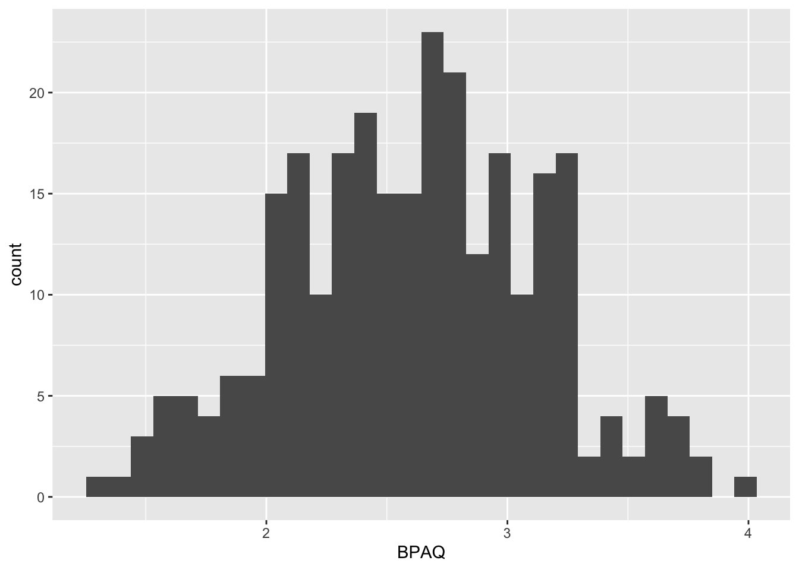
The default geom_histogram() produces the above plot. However, we can tweak several arguments in geom_histogram() to change the presentation of data, including:
-
binwidth: the width of each bin, or… -
bins: the number of bins -
color: the color of the perimeter of each bin/bar (notecolorrefers to lines) -
fill: the color of the bin/bar itself (notefillrefers to spaces) -
mapping = aes(): change the mapping (see below)
For example, to get this in APA format we would like light gray bars with black lines. Rather than the default 30 bins, we elect to use the rule of thumb number of bins should equal the \(\sqrt{N}\).
# step 1
p <- ggplot(data = aggression_data)
# before plotting get the get the number of observations
N <- nrow(aggression_data)
#step 2:
p <- p + geom_histogram(mapping = aes(x=BPAQ,y=..count..),
fill="light gray",
color="black",
bins = sqrt(N))
# show the result
show(p)Warning: Computation failed in `stat_bin()`
Caused by error in `bin_breaks_bins()`:
! `bins` must be a whole number, not the number 16.58.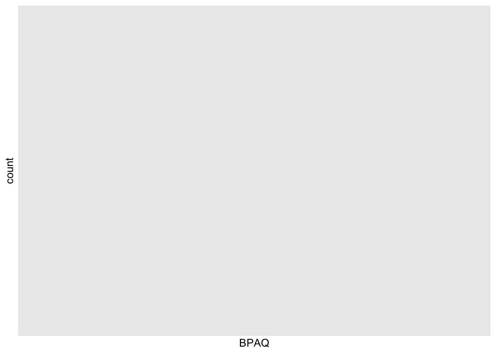
Step 3: Adjust the axes and labels
The plot at the end of Step 2 is almost there, but there are a few issues that remain. First, our axis labels could be more descriptive than “count” and “BPAQ”. This is solved by adding the arguments xlab() and ylab() to our plot. For example:
#STEP 1
p <- ggplot(data = aggression_data)
#STEP 2
# get the number of observations
N <- nrow(aggression_data)
# number of bins is sqrt of N
p <- p + geom_histogram(mapping = aes(x=BPAQ,y=..count..),
fill="light gray",
color="black",
bins = sqrt(N))
# STEP 3:
p <- p + xlab("BPAQ score") + ylab("Number of Scores")
show(p)Warning: Computation failed in `stat_bin()`
Caused by error in `bin_breaks_bins()`:
! `bins` must be a whole number, not the number 16.58.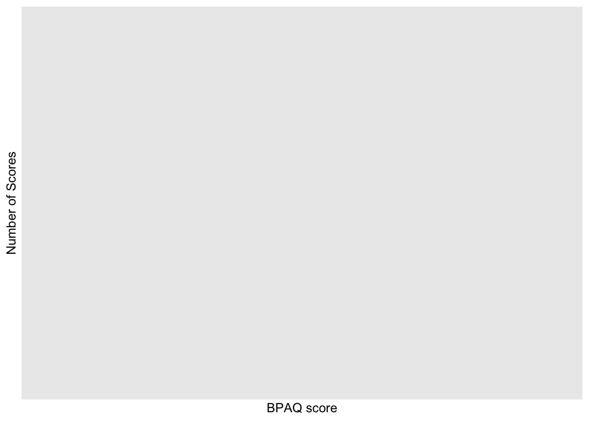
Another issue may be that gap that sits between the x-axis (x=0) and the axis scale. This can be remedied by adding the following to our plot p:
Warning: Computation failed in `stat_bin()`
Caused by error in `bin_breaks_bins()`:
! `bins` must be a whole number, not the number 16.58.The coord_cartesian() command allows us to zoom in or zoom out of our axes. There are several arguments that this command takes including:
-
xlim=: takes a pair of valuesc(lower,upper)for limits of x-axis (note that I didn’t modify this, but you can try it just to see what happens) -
ylim=: same as above, but for y-axis -
expand=: do you want to create additional whitespace between your data and axes?
For example if I wanted to only show Stat quiz scores with Number of Scores between 15 and 40 I can just zoom into my plot (with needing to go back and filter my original data)
Coordinate system already present. Adding new coordinate system, which will
replace the existing one.Warning: Computation failed in `stat_bin()`
Caused by error in `bin_breaks_bins()`:
! `bins` must be a whole number, not the number 16.58.
Or if I instead wanted to only focus on those Students that scored between 4 and 8:
Coordinate system already present. Adding new coordinate system, which will
replace the existing one.Warning: Computation failed in `stat_bin()`
Caused by error in `bin_breaks_bins()`:
! `bins` must be a whole number, not the number 16.58.
Not something I would in this case, but just an example. OK, let’s get back to our working plot:
#STEP 1
p <- ggplot(data = aggression_data)
#STEP 2
# get the number of observations
N <- nrow(aggression_data)
# number of bins is sqrt of N
p <- p + geom_histogram(mapping = aes(x=BPAQ,y=..count..),
fill="light gray",
color="black",
bins = sqrt(N))
# STEP 3:
# adjust axes labels
p <- p + xlab("Stats quiz score") + ylab("Number of Scores")
# adjust scale of x,y axes if needed:
p <- p + coord_cartesian(ylim=c(0,40), expand = FALSE)
show(p)Warning: Computation failed in `stat_bin()`
Caused by error in `bin_breaks_bins()`:
! `bins` must be a whole number, not the number 16.58.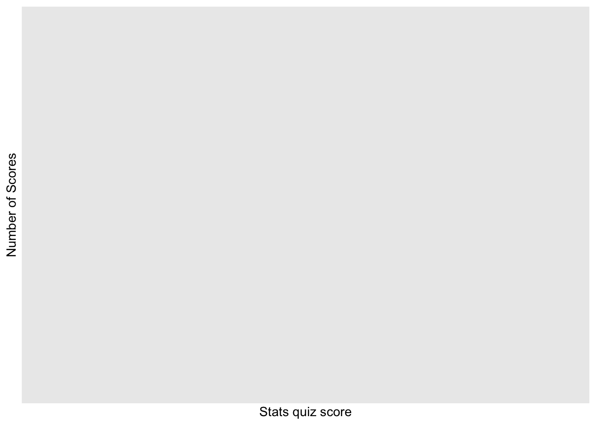
One last thing to consider regarding our axes are the location of labels on the scale. For example the y-axis has labels at every 10 and the x-axis at every 1. What if we want to change the labels on the x-axis? Here we can add scale_y_continuous to our plot p. We need to tell scale_y_continuous what our desired sequence is. You’ve done sequences before, like the sequence from 0 to 10:
However, if we want to say count by 2’s the command is a little more involved
where seq(start, stop, by). So to start at 0 and stop at 4 (along the x-axis) going by .5 in our plot we add breaks= seq(0, 4, .5):
#STEP 1
p <- ggplot(data = aggression_data)
#STEP 2
# get the number of observations
N <- nrow(aggression_data)
# number of bins is sqrt of N
p <- p + geom_histogram(mapping = aes(x=BPAQ,y=..count..),
fill="light gray",
color="black",
bins = sqrt(N))
# STEP 3:
# adjust axes labels
p <- p + xlab("Stats quiz score") + ylab("Number of Scores")
# adjust scale of x,y axes if needed:
p <- p + coord_cartesian(ylim=c(0,40), expand = FALSE)
# change x axis ticks:
p <- p + scale_x_continuous(breaks = seq(0,4,.5))
show(p)Warning: Computation failed in `stat_bin()`
Caused by error in `bin_breaks_bins()`:
! `bins` must be a whole number, not the number 16.58.
Can you figure out how we make transform the Y-axis labels to count by 5’s instead of 10’s??
Step 4: Adjusting for APA
While the plot at the end of Step 4 is almost there, there are a few issues remaining, Including that gray grid in the background and the lack of axis lines. In the past these changes would need to be done line by line. But fortunately for us we are in the glorious present, and there is a library that does a lot of this cleaning for you.
Introducing cowplot!!!!
OK, we’ve loaded cowplot. Now what? Simply re-run the previous chunk, but this time adding theme_cowplot() to the end. Note that running ? theme_cowplot shows that it includes arguments for font size, font family (type), and line size. Below I’m just going to ask for size “15” font. I typically leave the font type alone, but if I do change it I may occasionally use font_family="Times":
p <- ggplot(data = aggression_data)
#STEP 2
# get the number of observations
N <- nrow(aggression_data)
# number of bins is sqrt of N
p <- p + geom_histogram(mapping = aes(x=BPAQ,y=..count..),
fill="light gray",
color="black",
bins = sqrt(N))
# STEP 3:
# adjust axes labels
p <- p + xlab("Stats quiz score") + ylab("Number of Scores")
# adjust scale of x,y axes if needed:
p <- p + coord_cartesian(ylim=c(0,40), expand = FALSE)
# change x axis ticks:
p <- p + scale_x_continuous(breaks = 1:10)
# STEP 4:
p <- p + theme_cowplot()
show(p)Warning: Computation failed in `stat_bin()`
Caused by error in `bin_breaks_bins()`:
! `bins` must be a whole number, not the number 16.58.
Easy-peasy! You’ll note that cowplot adjusted your fonts, fixed your axes, and removed that nasty background. Even more, once cowplot is loaded it doesn’t need to be called to do this. It just sits in the background and automatically adjusts the format of any plot you make using ggplot. If you ever wanted to return to the default plot style you can run the following:
But for now cowplot FTW!!! (other cool cowplot things will show up in the advanced section).
Step 5: Add and adjust the legend
Doesn’t make sense in this context so not going to spend a lot of time here, but more on this when it’s relevant.
Condensing the code
For the purposes of making the steps clear, we separated the steps out, adding to and overwriting p (previous iterations of the plot). But, this could all be accomplished in a single call, separating each step with the “+” sign
# get N for a frequency plot
N <- nrow(aggression_data)
# create plot
p <- ggplot(data = aggression_data) +
geom_histogram(mapping = aes(x=BPAQ,y=..count..),
fill="light gray",
color="black",
bins = sqrt(N)) +
xlab("Stats quiz score") + ylab("Number of Scores") +
coord_cartesian(ylim=c(0,40), expand = FALSE) +
scale_x_continuous(breaks = 1:10) +
theme_cowplot()
show(p)Warning: Computation failed in `stat_bin()`
Caused by error in `bin_breaks_bins()`:
! `bins` must be a whole number, not the number 16.58.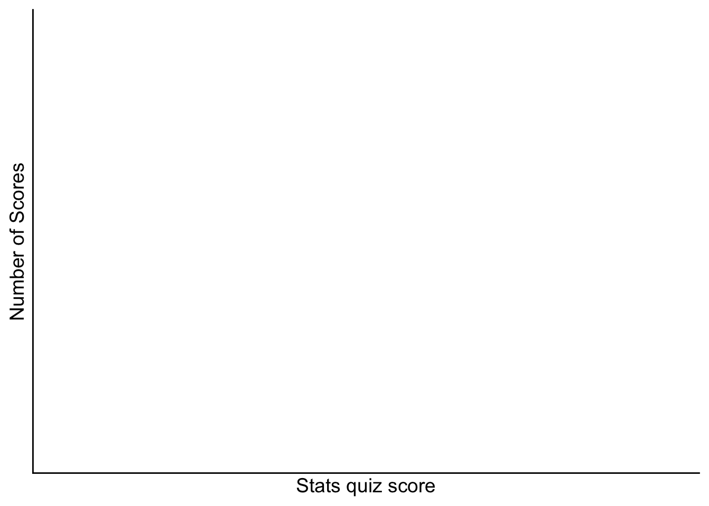
Saving the ggplot.
In many cases it may make sense to save your resulting plot. For example if you want to move your plot to a Word document or save a folder of plots for easy visualization.
Within command-line, plots can be saved using the ggsave() function. Note that both cowplot and ggplot libraries have a ggsave() function. They for the most part do the same thing. Lets get some help on ggsave() to see exactly what the parameters are:
from the result the important arguments are:
filename = Filename of plot plot = Plot to save, defaults to last plot displayed. device = what kind of file, depending on extension. path = Path to save plot to (defaults to project folder). scale = Scaling factor. width = Width (defaults to the width of current plotting window). height = Height (defaults to the height of current plotting window). units = Units for width and height (in, cm, or mm). dpi = DPI to use for raster graphics.
So to save the previous plot to my project folder, p as a .pdf to a file names “histogram.pdf” with the dimensions 8-in by 6-in, and a DPI of 300 (300 is usually the min you want for print)
Warning: Computation failed in `stat_bin()`
Caused by error in `bin_breaks_bins()`:
! `bins` must be a whole number, not the number 16.58.if I wanted an image file like a .png, I just change the filename extension:
Warning: Computation failed in `stat_bin()`
Caused by error in `bin_breaks_bins()`:
! `bins` must be a whole number, not the number 16.58.Note that you can also copy and save plots that are printed in your Notebook and Plots tab. In the notebook, simply right click on top of the plot for a quick Copy or Download. For plots printed to the Plots tab, click the Export button (this gives you all the options as ggsave).
Advanced stuff
Customizing your plot
Let’s rerun the example one more time for practice, but this time lets make things a little more concrete in terms of customization. Again I’m going to go through step-by-step for clarity. This time we’ll create a histogram, with an overlay of the normal distribution (more on that next week)
First let’s use ggplot() to create a histogram. To get a feel for each step, run through this code line by line in RStudio:
# load in tidyverse if you haven't already
pacman::p_load(tidyverse)
# Step 1: identify data and grouping parameters
histPlot1 <- ggplot2::ggplot(data = aggression_data, aes(x=BPAQ))
histPlot1 # note that this produces a blank slate but the parameters are locked in.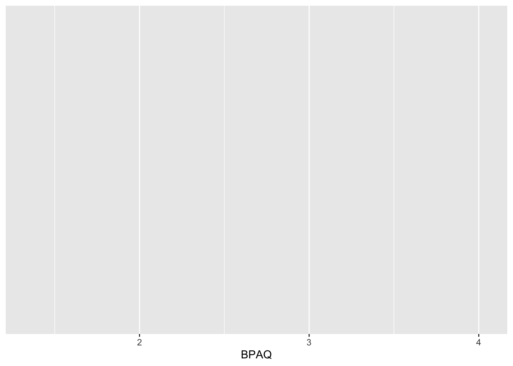
# take histPlot 1 (blank plot) and paint a layer on top of it
# tell ggplot what to do (this is where you actually build the graphics):
# take histPlot 1's parameters and...
histPlot2 <- histPlot1 +
# build a histogram
geom_histogram(binwidth = .25, # bins are 5 units wide
color = "orange", # what color is the outline of bars
fill = "green") # what color to fill the bars with
histPlot2 # show the frequency plot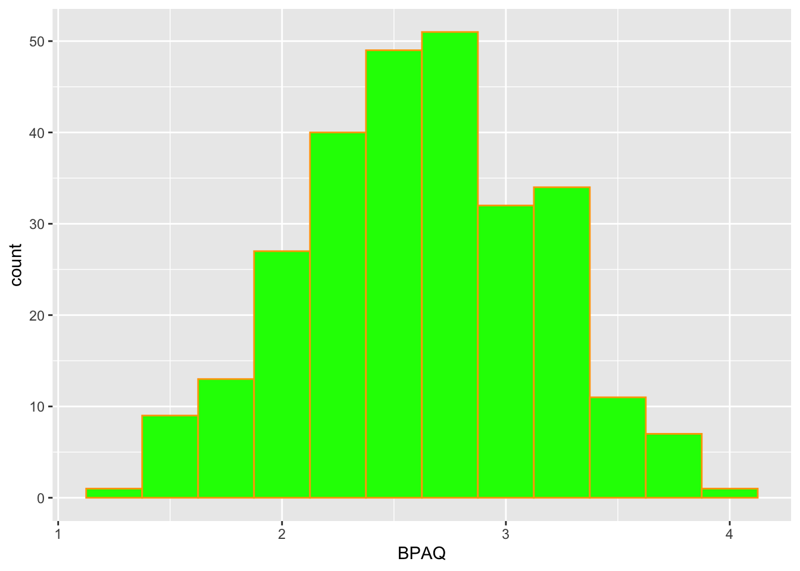
I intentionally made a hideous looking plot above to show you what the additional arguments do. Let’s turn this into something a little more pleasing to the eyes:
histPlot2 <- histPlot1 +
geom_histogram(binwidth = .25,
color = "black", # what color is the outline of bars
fill = "white") # what color to fill the bars with
histPlot2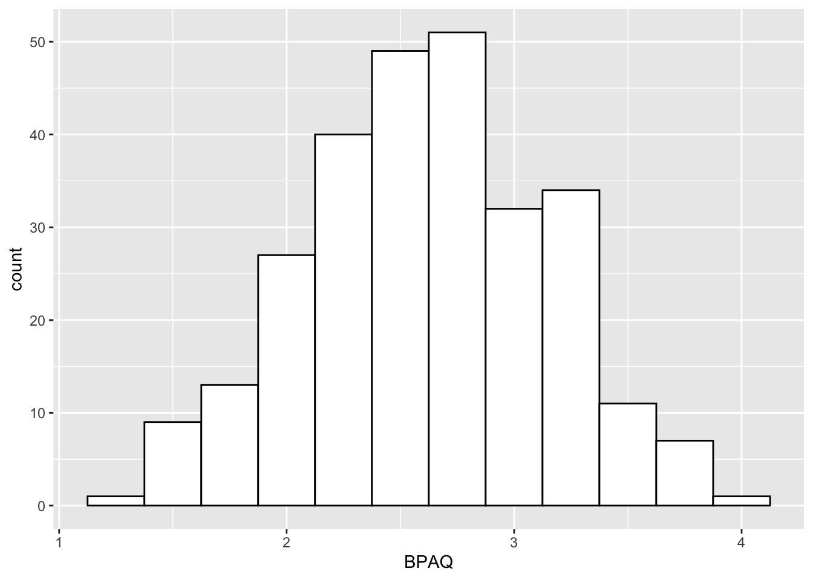
Okay, now to add a curve representing the normal distribution. One important thing to note is that the histogram that is ultimately produced here has probability density (think like % of scores) on the y-axis instead of frequency (# of scores). So we’ll need to convert our frequency plot to a probability density plot. Fortunately this is just one line of code. Instead of ..count.. we use ..density...
# take histPlot 1 (blank plot) and paint a layer on top of it
# tell ggplot what to do (this is where you actually build the graphics):
histPlot3 <- histPlot1 +
geom_histogram(binwidth = .25,
color = "black",
fill = "white",
aes(y=..density..)# convert to a prob density plot
)
histPlot3 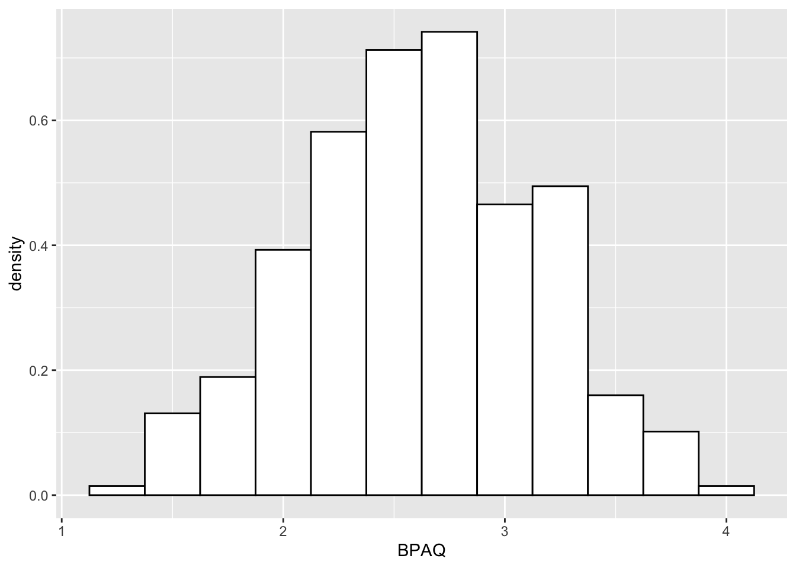
notice that histPlot3 is a density plot rather frequency plot from above. Now to add the normal curve:
# add a normal curve to density plot:
histPlot4 <- histPlot3 +
stat_function(fun = dnorm, # generate theoretical norm data
color = "red", # color the line red
args=list(
mean = mean(aggression_data$BPAQ,na.rm = T), # build around mean
sd = sd(aggression_data$BPAQ,na.rm = T) # st dev parameter
)
)
histPlot4
Some suggest that a better alternative to the normal curve is a kernel density plot. To fit a kernel density plot to our histogram (histPlot3) we can invoke:
and let’s make the x-axis label a little more transparent with xlab()
Keep in mind, that although we walked-through making histPlot1, then histPlot2, histPlot3, histPlot4, we could have accomplished all of this with a single assign:
histPlot <- ggplot2::ggplot(data = aggression_data, aes(x=BPAQ)) +
geom_histogram(binwidth = .25,
color = "black",
fill = "white",
aes(y=..density..)) +
stat_function(fun = dnorm, # generate theoretical norm data
color = "red", # color the line red
args=list(
mean = mean(aggression_data$BPAQ,na.rm = T), # build around mean
sd = sd(aggression_data$BPAQ,na.rm = T) # st dev parameter
)
)
histPlot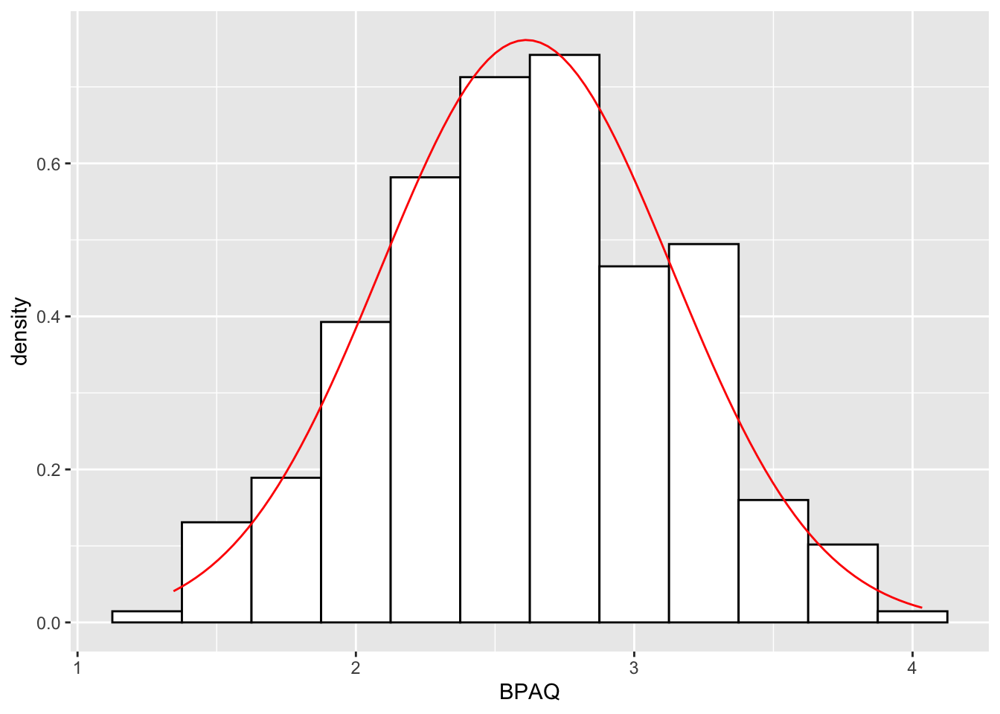
Moreover, we could facet the plot by some categorical variable, for example fctr_Gender. Conceptually, faceting is the equivalent of performing psych::describeBy(), separating the data by some grouping variable. For example, to get the summary stats of BPAQ scores by gender:
# specifying $BPAQ because I don't want a print out of the entire dataframe
psych::describeBy(x = aggression_data$BPAQ, group = aggression_data$fctr_Gender)
Descriptive statistics by group
group: Man
vars n mean sd median trimmed mad min max range skew kurtosis se
X1 1 57 2.66 0.51 2.69 2.67 0.66 1.62 3.69 2.07 0 -0.96 0.07
------------------------------------------------------------
group: Woman
vars n mean sd median trimmed mad min max range skew kurtosis se
X1 1 218 2.6 0.53 2.62 2.6 0.56 1.34 4.03 2.69 0.02 -0.31 0.04To separate the two histogram distributions I can simply add facet_wrap(~fctr_Gender) to my ggplot call; ~ means “by”, as in facet wrap by Gender (remember that fctr_Gender is a column we created to rid ourselves of the numeric coding):
histPlot <- ggplot2::ggplot(data = aggression_data, aes(x=BPAQ)) +
geom_histogram(binwidth = .25,
color = "black",
fill = "white",
aes(y=..density..)) +
stat_function(fun = dnorm, # generate theoretical norm data
color = "red", # color the line red
args=list(
mean = mean(aggression_data$BPAQ,na.rm = T), # build around mean
sd = sd(aggression_data$BPAQ,na.rm = T) # st dev parameter
)
) +
facet_wrap(~fctr_Gender)
histPlot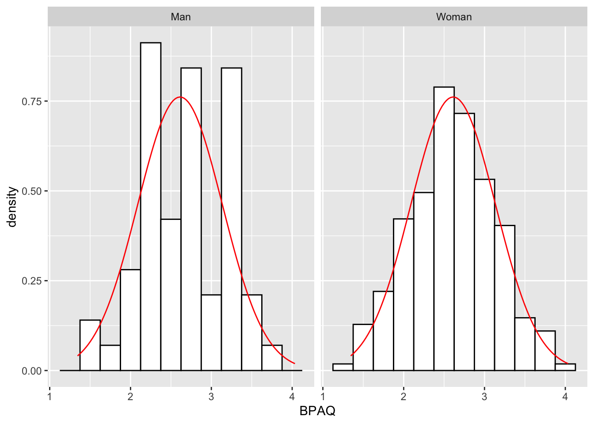
Plotting your data in a boxplot:
Now let’s create a few boxplots of BPAQ. First the entire dataset, indifferent to the 2 different categories of fctr_Gender:
# Set the parameters (data and axes)
ggplot2::ggplot(data = aggression_data) +
geom_boxplot(mapping = aes(y=BPAQ)) # tell R to make it a boxplot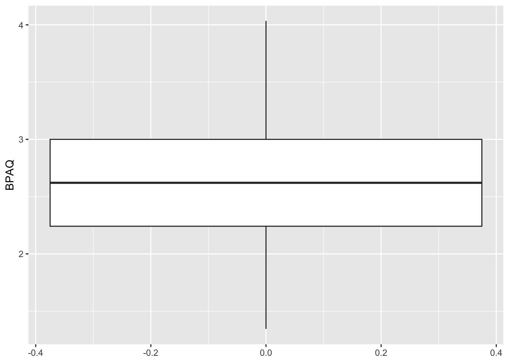
Note that the x-axis in this plot is meaningless. We can remove it if we want:
# Set the parameters (data and axes)
ggplot2::ggplot(data = aggression_data) +
geom_boxplot(mapping = aes(y=BPAQ)) + # tell R to make it a boxplot
theme(axis.text.x=element_blank(), # element_blank removes item, in this case x-axis text
axis.ticks.x = element_blank() # and ticks
)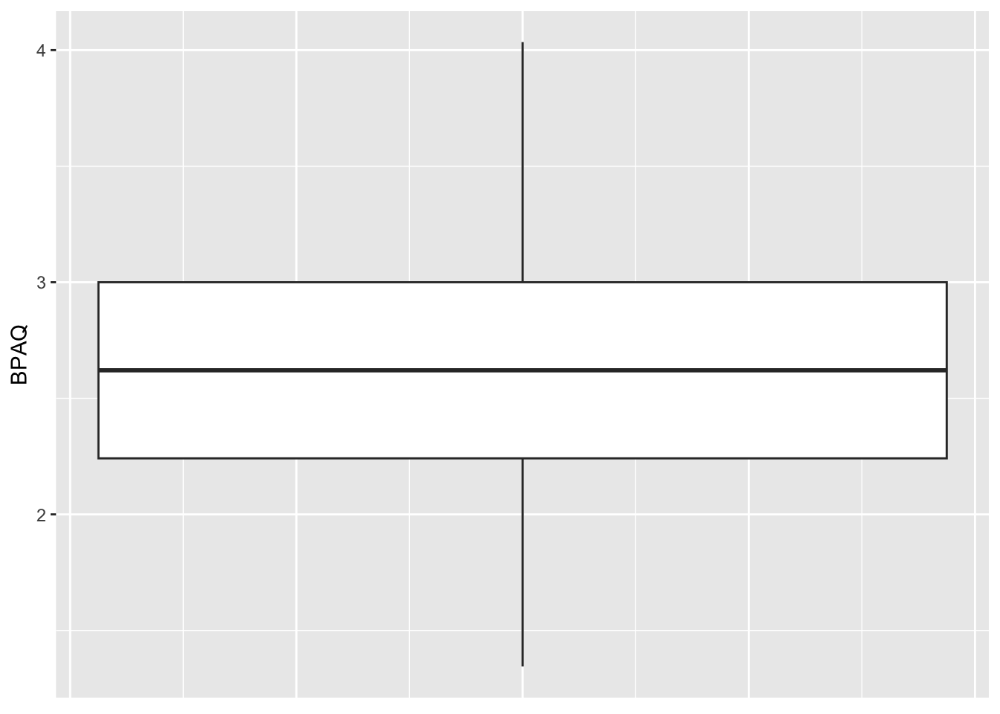
Now let’s take a look at the data that will be boxplotted as a function of fctr_Gender groups. Here I want to note that psych::describeBy has an additional argument to display the quantiles:
Descriptive statistics by group
group: Man
vars n mean sd median trimmed mad min max range skew
age 1 57 20.60 5.87 18.00 19.21 0.00 17.00 50.00 33.00 3.09
BPAQ 2 57 2.66 0.51 2.69 2.67 0.66 1.62 3.69 2.07 0.00
AISS 3 57 2.74 0.34 2.75 2.73 0.30 1.80 3.70 1.90 0.28
alcohol 4 55 17.95 18.22 12.00 15.42 17.79 0.00 73.00 73.00 1.06
BIS 5 57 2.23 0.33 2.19 2.21 0.29 1.69 3.12 1.42 0.64
NEOc 6 57 3.64 0.56 3.67 3.64 0.62 2.33 4.75 2.42 -0.13
gender 7 57 0.00 0.00 0.00 0.00 0.00 0.00 0.00 0.00 NaN
NEOo 8 57 3.27 0.59 3.33 3.30 0.62 1.67 4.33 2.67 -0.41
fctr_Gender* 9 57 1.00 0.00 1.00 1.00 0.00 1.00 1.00 0.00 NaN
kurtosis se Q0.25 Q0.75
age 10.46 0.78 18.00 19.00
BPAQ -0.96 0.07 2.28 3.17
AISS 0.95 0.05 2.55 2.95
alcohol 0.44 2.46 2.50 29.50
BIS 0.03 0.04 2.04 2.42
NEOc -0.65 0.07 3.25 4.08
gender NaN 0.00 0.00 0.00
NEOo -0.10 0.08 2.83 3.75
fctr_Gender* NaN 0.00 1.00 1.00
------------------------------------------------------------
group: Woman
vars n mean sd median trimmed mad min max range skew
age 1 218 20.11 4.70 19.00 19.03 1.48 17.00 50.00 33.00 3.86
BPAQ 2 218 2.60 0.53 2.62 2.60 0.56 1.34 4.03 2.69 0.02
AISS 3 218 2.51 0.37 2.52 2.51 0.37 1.45 3.70 2.25 -0.01
alcohol 4 215 15.50 15.22 12.00 13.36 13.34 0.00 96.00 96.00 1.63
BIS 5 218 2.30 0.36 2.27 2.28 0.40 1.42 3.15 1.73 0.29
NEOc 6 218 3.52 0.60 3.50 3.53 0.49 1.83 4.92 3.08 -0.15
gender 7 218 1.00 0.00 1.00 1.00 0.00 1.00 1.00 0.00 NaN
NEOo 8 218 3.38 0.50 3.42 3.39 0.49 1.83 4.67 2.83 -0.14
fctr_Gender* 9 218 2.00 0.00 2.00 2.00 0.00 2.00 2.00 0.00 NaN
kurtosis se Q0.25 Q0.75
age 17.01 0.32 18.00 20.00
BPAQ -0.31 0.04 2.21 2.97
AISS 0.01 0.02 2.25 2.75
alcohol 4.16 1.04 3.50 23.00
BIS -0.27 0.02 2.04 2.54
NEOc -0.04 0.04 3.17 3.90
gender NaN 0.00 1.00 1.00
NEOo -0.30 0.03 3.00 3.73
fctr_Gender* NaN 0.00 2.00 2.00To plot this we need to tell R to put different distributions at different points along the x-axis
Before leaving I want to show what would’ve happened in the latter case if we didn’t correct fctr_Gender and left it as a numeric variable (as gender in our data frame) rather than converting to a categorical:
# creating the boxplot using exact code from chunk above:
ggplot2::ggplot(data = aggression_data, aes(y=BPAQ, x = gender)) +
geom_boxplot()Warning: Continuous x aesthetic
ℹ did you forget `aes(group = ...)`?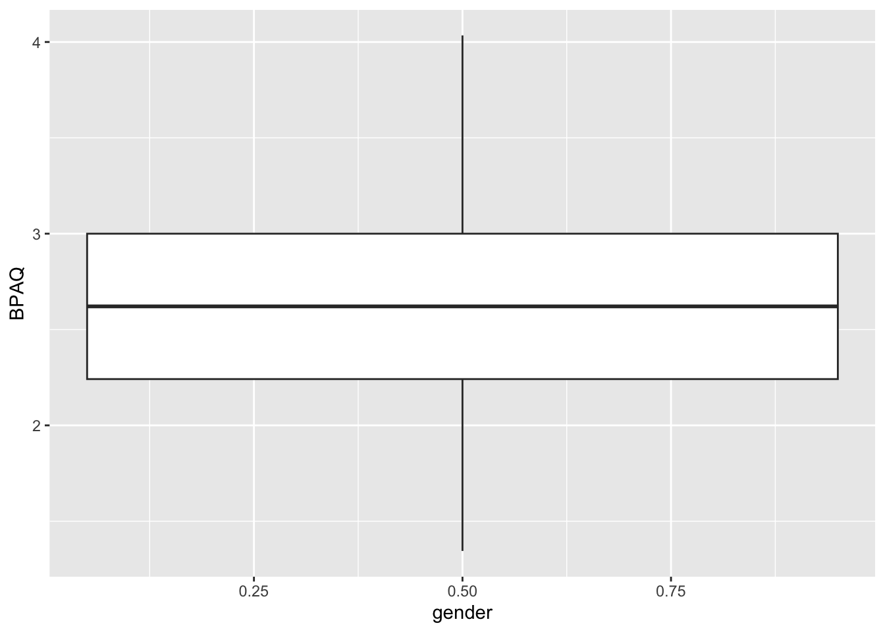
Since R treats the categorical variable as a numeric, all of the data gets lumped together at the mean value of Gender even though we explicitly tried to group our data by this variable. Remember, you need to be careful with having categorical data coded as numbers!
Cowplot
Finally, we can combine multiple plots using the cowplot package and its two commands plot_grid() and plot_wrap. For example, we can recreate a plot in the style of Winter, Figure 3.4 (p. 59) by creating a histogram of our data, then a boxplot of out data, and then aligning them:
histPlot <- ggplot2::ggplot(data = aggression_data, aes(x=BPAQ)) +
geom_histogram(binwidth = .25,
color = "black",
fill = "white",
aes(y=..density..)) +
stat_function(fun = dnorm, # generate theoretical norm data
color = "red", # color the line red
args=list(
mean = mean(aggression_data$BPAQ,na.rm = T), # build around mean
sd = sd(aggression_data$BPAQ,na.rm = T) # st dev parameter
)
) +
theme_cowplot()
boxPlot <- ggplot2::ggplot(data = aggression_data) +
geom_boxplot(mapping = aes(y=BPAQ),outlier.color = "red") + # tell R to make it a boxplot
coord_flip() + #make horizontal
theme(axis.text.x=element_blank(), # element_blank removes item, in this case x-axis text
axis.ticks.x = element_blank() # and ticks
) +
theme_void()
combined_plot <- cowplot::plot_grid(histPlot,boxPlot, align = "hv",ncol = 1,rel_heights = c(4,1))
combined_plot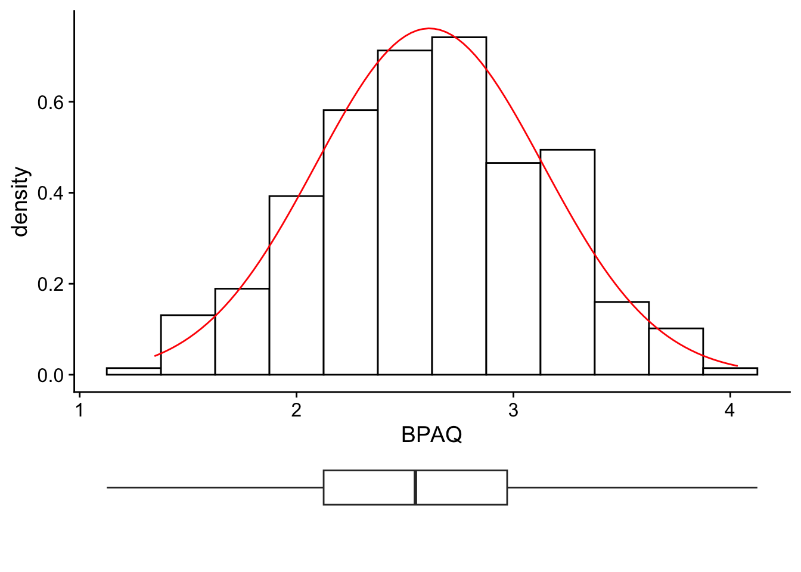
For other cool stuff that can be done with cowplot() including placing multiple plots side by side, check out the vignette links below written by its author, Claus O. Wilke: